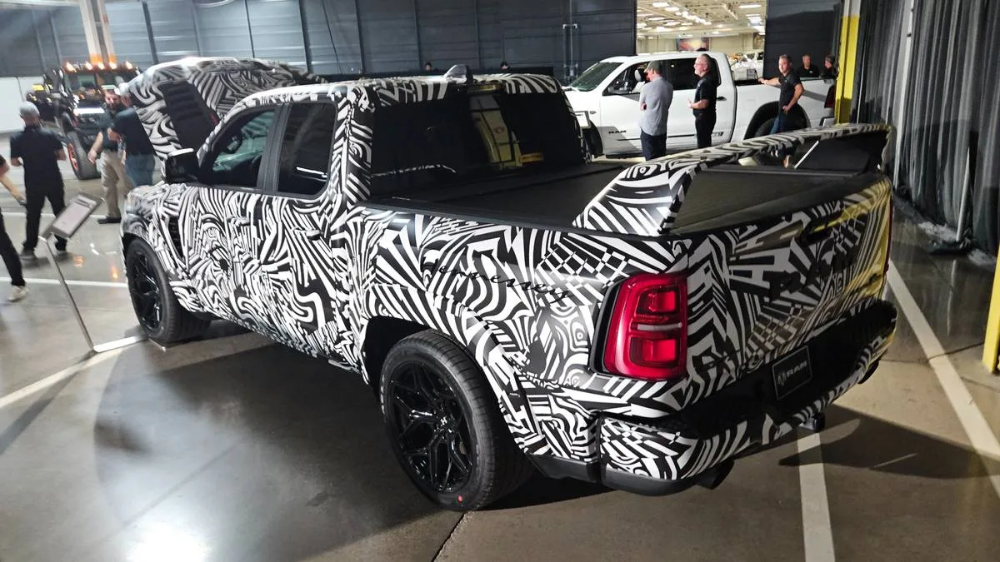
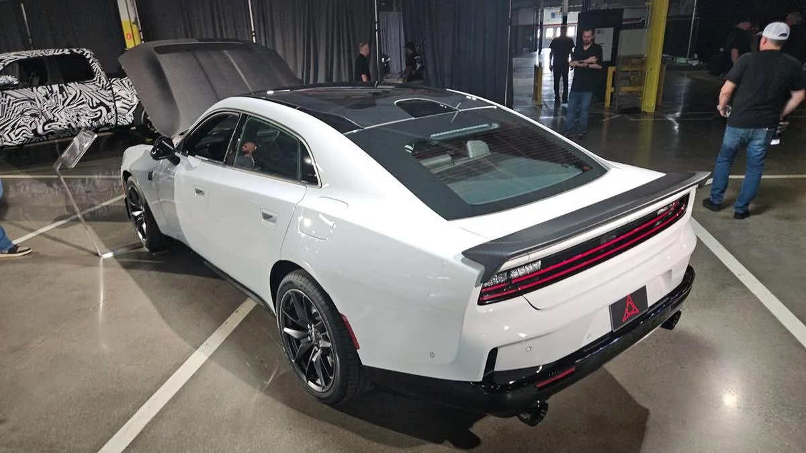
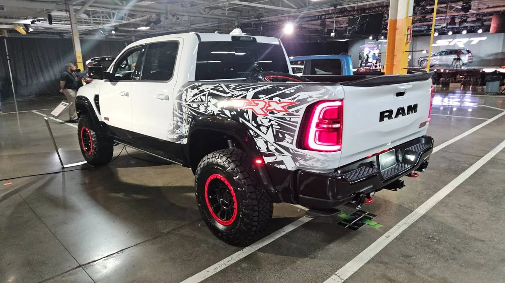

▲ 다이렉트 커넥션과 폭스 팩토리가 함께 만든 램 1500 DC 650. 5.7리터 슈퍼차저 헤미 엔진을 탑재했다
스텔란티스의 고성능 부서 SRT가 애프터마켓 튜닝 업체들과 손잡고 일련의 콘셉트 트럭을 공개했습니다. 이번 프로젝트의 핵심은 1974년 처음 등장했던 '다이렉트 커넥션(Direct Connection)' 브랜드의 부활입니다. 룩스(Roush), 폭스 팩토리(Fox Factory), 헤네시(Hennessey) 같은 유명 애프터마켓 튜닝 회사들과 협업한 램 픽업트럭, 그리고 닷지 차저를 기반으로 한 콘셉트카까지 함께 공개됐습니다.
1. 경쟁자를 파트너로 — 이례적인 협업 구조
자동차 제조사가 서드파티 튜닝 업체와 공식적으로 손잡는 사례는 흔치 않습니다. 헤네시는 슈퍼차저를 얹은 6.2리터 헤미 엔진 기반 '맥시무스' 램 럼블 비 SRT 트럭을, 폭스 팩토리는 5.7리터 슈퍼차저 헤미를 탑재한 램 1500 DC 650과 램 2500 HD 트럭을 각각 선보였습니다. 룩스는 별도의 램 1500 DC 콘셉트를 내놨습니다. 이들은 원래 순정 차량을 개조해 판매하는 애프터마켓 업체들인데, 이번에는 스텔란티스와 정식으로 협업해 브랜드 공인 콘셉트를 만든 것입니다.

▲ 헤네시가 제작한 슈퍼차저 6.2L 헤미 엔진 기반 '맥시무스' 램 럼블 비 SRT 트럭
2. "애프터마켓은 충분히 큰 시장"
SRT 부사장 톰 사코먼은 이번 협업의 배경에 대해 "애프터마켓 사업은 충분히 큰 시장"이라며, "신뢰할 수 있는 파트너들과 연결되는 것이 포트폴리오를 확장하는 방법"이라고 설명했습니다. 실제로 애프터마켓 성능부품 시장은 연간 약 50억 달러 규모로 추산됩니다. 그동안 이 시장의 수요를 외부 튜닝 업체들이 흡수해왔다면, 스텔란티스는 이제 공식 파트너십을 통해 이 시장의 일부를 브랜드 안으로 끌어들이려는 전략을 쓰고 있는 셈입니다. 고객 충성도 강화와 새로운 수익원 확보라는 두 마리 토끼를 동시에 노리는 접근입니다.
| 협업사 | 기반 차량 |
|---|---|
| 폭스 팩토리 | 램 1500 DC 650, 램 2500 HD |
| 헤네시 | 맥시무스 램 럼블 비 SRT |
| 룩스 | 램 1500 DC |
| SRT 자체 | 닷지 차저 식스팩 콘셉트 |

▲ 닷지 차저 식스팩 콘셉트. 트럭뿐 아니라 세단 라인업까지 다이렉트 커넥션 프로젝트에 포함됐다
3. 필로사와 쿠니스키스, 성능 부서의 부활
이번 프로젝트의 배경에는 리더십 변화도 있습니다. 스텔란티스 CEO 안토니오 필로사와 함께, 고성능 브랜드 운영에 정통한 팀 쿠니스키스가 복귀하면서 회사가 성능 부문에 다시 힘을 싣고 있습니다. 최근 몇 년간 전동화 전환에 집중하며 상대적으로 뒷전으로 밀렸던 모파(Mopar) 성능 문화가, 이번 다이렉트 커넥션 부활을 계기로 다시 전면에 나서는 모양새입니다. 지프 그랜드 체로키에 eBoost 에어 컴프레서를 얹은 콘셉트도 이미 공개된 바 있어, 앞으로 더 많은 차종으로 이런 협업이 확장될 가능성이 높습니다.

▲ 폭스 팩토리가 제작한 램 1500 TRX 기반 다이렉트 커넥션 콘셉트. 추가 애프터마켓 차량들도 개발 중인 것으로 알려졌다
4. 정리 — 모파 성능의 귀환, 어디까지 갈까
이번에 공개된 차량들은 아직 콘셉트 단계로, 실제 양산이나 정식 판매 계획은 확인되지 않았습니다. 하지만 CEO급 인사가 직접 나서고, 여러 유명 튜닝 업체와 동시에 협업했다는 점에서 스텔란티스의 진정성은 분명해 보입니다. SRT 측은 추가적인 애프터마켓 차량들이 곧 공개될 예정이라고 밝혀, 이번 협업이 일회성 이벤트가 아니라 장기적인 브랜드 전략의 시작임을 시사하고 있습니다. 전동화 시대에도 여전히 굉음 나는 슈퍼차저 엔진을 원하는 소비자들에게, 다이렉트 커넥션이 어떤 답을 내놓을지 주목됩니다.